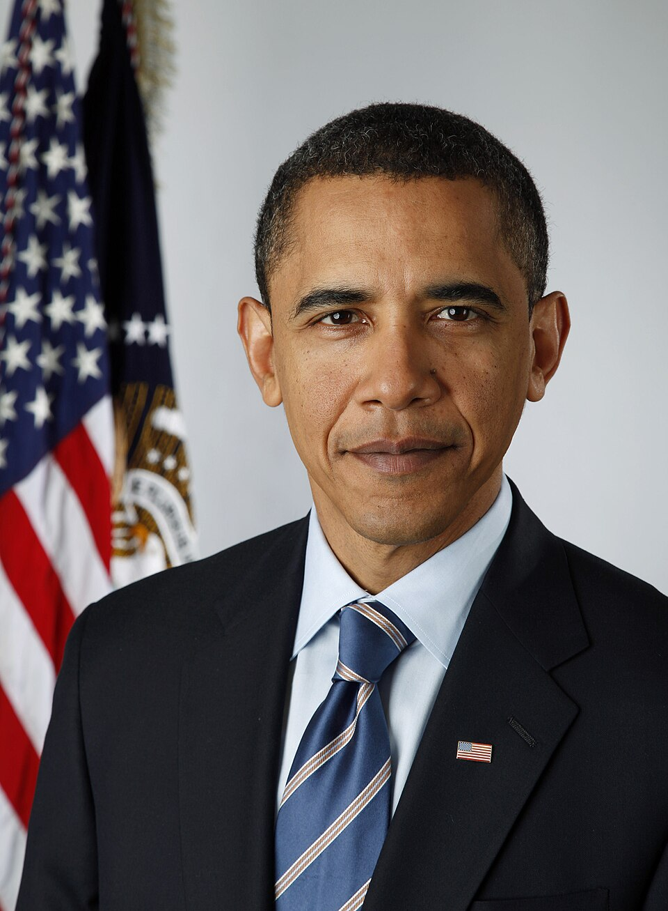

July 3, 2020, Independence Day celebration at Mount Rushmore.
Today, we pay tribute to the exceptional lives and extraordinary legacies of George Washington, Thomas Jefferson, Abraham Lincoln, and Theodore Rossevelt. This monument will never be desecrated, these heroes will never be defaced, their legacy will never, ever be destroyed.
In the past, Lincoln urged unity and equality; Rossevelt stressed fairness and protecting the people. Both valued justice to guide America's future.

Barack Obama2008, Obama's Victory speech in Chicago, Grant Park.
"As Lincoln said to a nation far more divided than ours: 'We are not enemies but friends. Though passion may have strained, it must not break our bonds of affection".
BackIn the past, Washington advice was to warn against political parties and foreign alliances, urging unity. And Jefferson stressed education, individual rights, and limited government to protect liberty. Their advice aimed to guide a strong and free America.
oval Office Withdrawal Speech july, 2024
These leaders stood firm in moments of great national challenge. Their courage and principle, he emphasized, must guide America now.